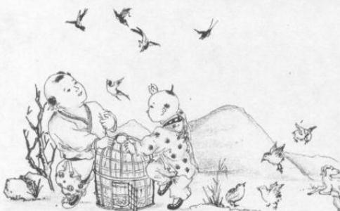

如理
放生法门，功德第一，上通天府，下抵幽冥，非大智大慧者，莫能轻信。
一个人放生，可以免除一个人身家的疾病灾祸；众多人放生，可以挽救世界的浩劫，改变世界的
举凡求寿求子、求
一切有漏善法中，没有比
十善之首是放生，十恶之首为
放生功德最为无量无边。我们一辈子行善的愿望，可以在一天短短的时间内满足实现，千千万万人累积善事的功德，我们自己一个人便可单独成就。只要有
我们当天放生，当天无数身陷牢笼的众生马上获得了自由，当天无数濒临死亡的生命马上重拾了生机，无限的功德当天马上可以获得。并且不管一人多人，钱少钱多，任何时间，任何地点，只要发慈悲心，任何人都可以进行放生。放生不像其他功德，不须要等待机缘，自己可以主动进行；不须要依赖别人，自己可以独立完成；千千万万人一生中做不到的功德，我们可以经由放生在短短的时间内独自一人完全成就，若更能以此广为提倡，功德更加不可思议，所以放生功德最为第一，非其他小善所能比！
《大智度论》云：“诸余罪中，杀业最重；诸功德中，放生第一。”
一切有漏善法中，没有比放生功德大的。所以
以慈悲心出资买动物放生，救度即将被宰杀吞食的畜众予以放生，所得福德深广无量，能消解病业疾苦、因果病痛、累世冤亲债主牵缠、各种恶疾，速得痊愈。
残忍心、自私心、杀害心、贪昧心、欺弱心；
同情心、怜悯心、爱护心、慈悲心、平等心。
放生可以圆满人天七德。人天七德包括种姓高贵、形色端严、长寿、无病、缘分优异、财势富足和智能广大。
《地藏十轮经》云： “设便能戒诸杀生，诸众恭敬成无上，恒时无病延
“众生至爱者生命，诸佛至爱众生，能救众生身命，则能成就诸佛功愿。”
《优婆塞经》云： “一切众生因杀生故，现在短命，财物秏减，眷属分离，横罹其殃，舍此身已，当堕
“能一天一夜持不杀生的戒律，来世中决不遇刀兵的灾劫。”
“劝君勤放生，终久得长寿，若发菩提心，遇难天须救。”
金山活佛：“最好的消业方法莫过于放生，世界上最大的恶业莫过于杀生害命，反过来说，世界上最大的善业是莫过于戒杀放生，所以放生是最大的功德。你能依我的话，赶快量力买生物放生，就能增福延寿。”
放生的好处放生就是救护那些被擒、被抓、将被宰杀、命在垂危的众生的命，而众生最宝贵的就是自己的生命得以重拾生机，救他们的命，他们感激最深，所以功德至大！
我们今生及累劫以来所造的杀业早已无量无边，放生就是出钱、出力来救赎众生的性命，以偿还以前我们所积欠无数的杀债。
放生与其他的功德不一样，是救命在旦夕，随时将被宰杀的生命得以重拾生机，是千钩一发、刻不容缓的行动，就好像是医院的急诊急救一般，一个
佛心就是大慈悲心，慈悲心是
任何一个众生的
与其空口说得万言，不如老实行得一字，学佛最重要的就是实践。在放生真实的行动中，真正去培养慈悲，真正去解救生命，真正去为众生皈依、念佛、忏悔、回向，真正去体会众生平等一如、皆具佛性、皆能成佛的道理，真正做到自利利他，这样的
吃素与放生是学佛人行持上极重要的二件事。但吃素只是止恶。是消极地不再造杀业，不再积欠新的杀债；而放生却是扬善，是积极地救赎生命，偿还以前所欠的杀债。吃素而不放生，以前欠的杀业还是有果报的；放生而不吃素，所修得的功德又因为吃肉杀生都赔光了。所以吃素放生是一体的二面，需要相辅相成的，同时并行，效果才会显著。
我们当天放生，当天无数身陷牢笼的众生马上获得了自由，无数濒临死亡的生命马上重拾了生机，无限的功德当天马上可以获得。并且不管一人多人、钱少钱多、任何时间、任何地点，只要发慈悲心，任何人都可以进行放生。放生不像其他功德，不需要等待机缘，自己可以主动进行；不需要依赖别人，自己可以独立完成；千千万万人一生中做不到的功德，我们可以经由放生短短的时间内独自一人完全成就，若更能以此广为提倡，功德更加不可思议，所以放生功德最为第一，非其他小善所能比！
我们今生的命运遭遇是因为多生以来所造就无数的
每一个众生在多生累劫以来，都曾经与我们结过冤仇，冤仇既结，怀恨在心，必当伺机报复。而放生正可以解冤释结，化敌为友，避免彼此的冤冤相报！
灾难不幸之所以发生，都是源于我们以前所结的冤业、所造的杀业而来。放生解救众生的命，免除了众生的死难，也同时消除了我们的宿业，免除了未来原本应该偿受不幸的业报，这是因果必然的道理。
其实疾病绝症之所以发生，就是因为以前我们杀生所感召的杀业而来。既造杀因必结杀果，既造成杀业必受杀报，解决之道就是放生，偿还杀债，消除了疾病根本的杀因，病苦自然好转。
每一个众生在无始的轮回中，都曾与我们互为父母、子女、手足、亲眷，只因彼此业缘不同，今朝我幸而为人，彼不幸沦为畜牲，放生就是救拔我们累世以来的亲友眷属，使其重拾生机，安享天年！
每个人都希望长寿，放生救赎生命，延长了无数众生的生命。也必然同时延长了自己的寿命，这是因果永恒不变的真理。
救人一命胜造七级
放生三施俱全，财布施、法布施、
以放生来说，最初要发广大的菩提心：为了一切生命远离痛苦恐怖，获得安乐，并逐渐成就佛果，我今天来放生，应该有这样一种心态。不能自私自利，只想着为了自己获得名声